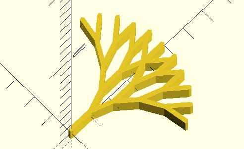
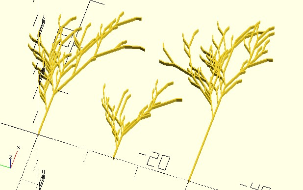
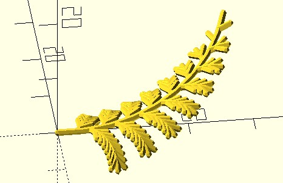
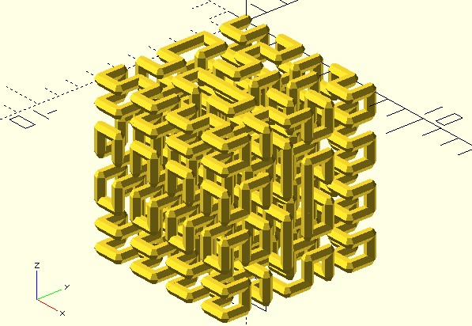
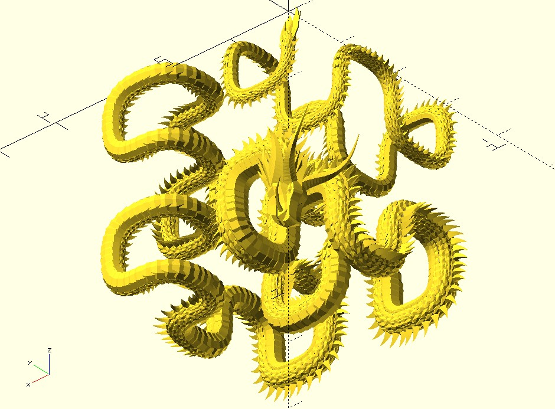

L-system 與碎形
March 15, 2022在〈2D 碎形／Sierpinski 三角形〉畫了Sierpinski 三角形，在〈3D 碎形／立體樹〉畫了樹，願意的話，也可以用海龜來畫〈科赫曲線〉、〈蕨葉曲線〉、〈雪花曲線〉、〈龍形曲線〉、〈希爾伯特曲線〉、〈十字繡曲線〉等碎形，並試著將之擴展為 3D 版本。
在實現這類碎形曲線的過程中，你可能會產生一個想法，這些曲線實際上都是以一系列前進、轉彎的指令，命令海龜做出相對應的動作，有沒有辦法將程式通用化，單純地餵一串指令給他們就好？
L-system 描述
例如〈3D 碎形／立體樹〉中的樹，想畫個 Y，就是前進，基於當時海龜狀態 t 左轉、[前進]，基於海龜狀態 t 右轉、[前進]，如果每個分支也想畫個 Y，就是將 [前進] 再生成為前進，基於當時海龜狀態 t 左轉、[前進]，基於海龜狀態 t 右轉、[前進]…如此不斷生成下去，最後海龜只要看這串指令，就可以畫出一棵樹。
基於海龜狀態 t，可以看成是將海龜狀態複製一份，放到堆疊裡頭，之後需要時再從堆疊取出，為了便於撰寫與生成指令，可以用符號來表示前進、置入堆疊、轉彎、取出等基本動作，先定義如下：
F：前進並畫線+：左轉-：右轉[：將目前狀態置入堆疊]：取出堆疊頂的狀態
方才的指令就可以簡化為：
- 初始：
X - 規則：
X → F[+X][-X]
最先會從 X 開始，X 生成一次就是 F[+X][-X]，第二次生成 X 就是 F[+F[+X][-X]][-F[+X][-X]]，第三次生成 X 就是 F[+F[+F[+X][-X]][-F[+X][-X]]][-F[+F[+X][-X]][-F[+X][-X]]]…就看你要生成幾次，假設只生成三次，若 X 本身也視為前進指令，就相當於 F[+F[+F[+F][-F]][-F[+F][-F]]][-F[+F[+F][-F]][-F[+F][-F]]]。
這樣的標記方式，其實是 Lindenmaye system，簡稱 L-system，是 1968年由荷蘭生物學和植物學家 Aristid Lindenmayer 提出，有關生長發展中的細胞交互作用的數學模型，方才談及的過程，實際上是在規範一種語言的文法，也就是 G = (V, ω, P)。
V 是符號集合，包含可被生成的變數以及不能被生成的常數；ω 是初始符號集合或稱為公理（axiom），為文法之源，P 是產生規則。
就方才的樹生長來說，依變數、常數、公理、規則，就可以如下表示：
- 變數：
X - 常數：
F[]+- - 公理：
X - 規則：
X → F[+X][-X]
這是個簡單的 L-system 描述，有些 L-system 的文法更豐富，也就可以達到更複雜的生長發展或碎形描述。
lsystem2 函式
由於生成指令的過程，不過就是一連串規律的符號取代過程，透過程式實現並不困難，在〈玩轉 p5.js〉的〈實作 L-system〉有示範怎麼實現，有興趣可以參考一下。
dotSCAD 的 lsystem2 就提供了 2D 版本的 L-system 描述生成函式，實現了方才談到的簡單文法，例如，就方才的樹生長來說：
use <turtle/lsystem2.scad>
use <util/dedup.scad>
use <polyline_join.scad>
for(line = dedup(tree())) {
polyline_join(line)
circle(.1);
}
function tree(n = 5, angle = 20, leng = 1, heading = 0, start = [0, 0]) =
let(
axiom = "X", // 公理
rules = [ // 規則
["X", "F[+X][-X]"]
]
)
lsystem2(axiom, rules, n, angle, leng, heading, start);
如程式示範的，你可以指定公理、規則，也可以指定轉彎角度、前進長度與生成次數等，lsystem2 會傳回每次前進一次的線段起點與終點，根據指定的公理與規則而定，記錄的線段可能會重複（想像一次堆疊中的海龜取出後，走的路徑與之前走過的可能會重疊），若不希望重複繪圖，可以透過 dotSCAD 的 dedup 去除重複資訊。
以上的繪製成果如下：

為了能提供生成的變化性，lsystem2 可以指定 rule_prs 參數，用以決定是否採取某條規則，數字越大採用的機率越高，來看看另一個植物的成長描述，每次生成的結果都不會相同：
use <turtle/lsystem2.scad>
use <util/dedup.scad>
use <polyline_join.scad>
for(i = [0:2]) {
translate([0, -i * 15])
for(line = dedup(plant())) {
polyline_join(line)
circle(.1);
}
}
function plant(n = 5, angle = 25, leng = 1, heading = 0, start = [0, 0], rule_prs = [0.6, 0.6]) =
let(
axiom = "X",
rules = [
["X", "F+[[X]-X]-F[-FX]+X"],
["F", "FF"]
]
)
lsystem2(axiom, rules, n, angle, leng, heading, start, rule_prs = rule_prs);
來看看其中幾種成長的可能性：

在 dotSCAD 程式庫的 examples/turtle/lsystem2_collection.scad 收集了一些 2D 版本的 L-system 描述，有興趣可以參考一下。
lsystem3 函式
dotSCAD 的 lsystem3 函式，提供了 3D 版本的 L-system 描述生成函式，例如，來看看 3D 版本的蕨葉成長描述：
use <turtle/lsystem3.scad>
use <util/dedup.scad>
use <polyline_join.scad>
for(line = dedup(fern())) {
polyline_join(line)
sphere(.5);
}
function fern(n = 8, angle = 4, leng = 1, heading = 0, start = [0, 0, 0]) =
let(
axiom = "EEEA",
rules = [
["A", "[++++++++++++++EC]B^+B[--------------ED]B+BA"],
["C", "[---------EE][+++++++++EE]B&&+C"],
["D", "[---------EE][+++++++++EE]B&&-D"]
]
)
lsystem3(axiom, rules, n, angle, leng, heading, start, forward_chars = "ABCDE");
這會生成以下的結果：

在 dotSCAD 程式庫的 examples/turtle/lsystem3_collection.scad 收集了一些 3D 版本的 L-system 描述，有興趣可以參考一下，例如，其中收集了 3D 版本的希爾柏特曲線（Hilbert curve）：
use <turtle/lsystem3.scad>
use <util/dedup.scad>
use <polyline_join.scad>
for(line = dedup(hilbert_curve())) {
polyline_join(line)
sphere(.25);
}
function hilbert_curve(n = 3, angle = 90, leng = 1, heading = 0, start = [0, 0, 0]) =
let(
axiom = "A",
rules = [
["A", "B-F+CFC+F-D&F^D-F+&&CFC+F+B//"],
["B", "A&F^CFB^F^D^^-F-D^|F^B|FC^F^A//"],
["C", "|D^|F^B-F+C^F^A&&FA&F^C+F+B^F^D//"],
["D", "|CFB-F+B|FA&F^A&&FB-F+B|FC//"]
]
)
lsystem3(axiom, rules, n, angle, leng, heading, start);
這會生成以下的結果：

我的作品 希爾柏特龍，就是基於 3D 版本的希爾柏特曲線，每三個點使用 bezier_curve 函式建立貝茲曲線作為龍身的路徑，並運用 along_with 模組，將環狀的龍鱗放到路徑上的每個點：

數學、程式演算、L-system、貝茲曲線、這就是希爾柏特龍之美！